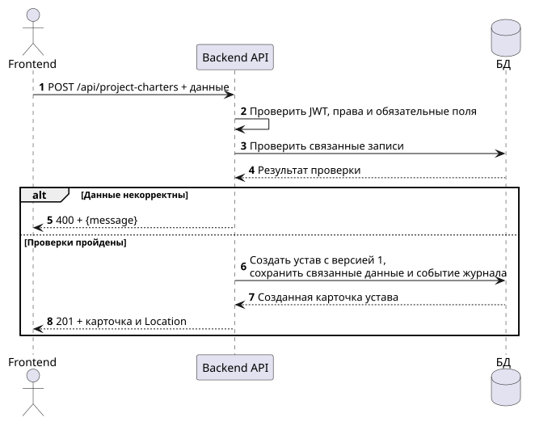

Создает черновик устава.
Доступ: право project_charter:manage.
Используется в UC-2. Создание устава.
Схема работы


Алгоритм
Проверить обязательные поля, суммы и существование связанных записей: организации, проекта, шаблона, пользователей и документов. Убедиться, что выбранный шаблон не находится в архиве.
Рассчитать общий бюджет как сумму статей. Если статьи отсутствуют, использовать значение
budgetTotal.Удалить повторяющиеся нормативные ссылки, сохранив первую ссылку на каждый документ. Добавить недостающие документы из требований выбранного шаблона.
Создать устав со статусом
draftи версией 1. Сохранить шаги согласования со статусомwaitingв порядке их передачи.Сохранить состояние устава в истории версий, добавить в журнал событие
createdи вернуть созданную карточку.
Входные параметры
Поле | Тип | Обязательно | Описание и ограничения |
|---|---|---|---|
| integer | Да |
|
| integer, nullable | Нет | Если указан, проект существует |
| integer, nullable | Нет | Шаблон должен существовать и не находиться в архиве. Публикация необязательна |
| integer, nullable | Нет | Существующий пользователь |
| string | Да | Непустое название устава |
| string | Да | Непустая цель проекта |
| string | Да | Непустое бизнес-обоснование |
| number | Нет |
|
| array | Нет | Статьи бюджета |
| array | Нет | Этапы проекта |
| array | Нет | Нормативные ссылки |
| array | Нет | Шаги маршрута согласования |
Если массивы не переданы, система использует пустые списки []. Значение null для массивов не поддерживается.
API допускает создание устава без статей бюджета, этапов и шагов согласования. Стандартная форма требует заполнить хотя бы одну статью бюджета, один этап и одного согласующего.
Структура элементов массивов
Массив | Поля |
|---|---|
| Обязательные: Необязательное: |
| Обязательное: Необязательные: |
| Обязательное: Необязательные: |
| Обязательное: Необязательное: |
Ответ
201 Created: возвращает карточку созданного устава. Заголовок Location содержит адрес созданного ресурса. Повторная отправка запроса создает еще один устав.
400 Bad Request: возвращает {message} при незаполненных обязательных полях, отрицательных суммах, некорректных данных статей бюджета, этапов или шагов согласования, а также при отсутствии связанных записей.
Пример запроса
{
"organizationId": 1,
"name": "Устав проекта модернизации",
"goal": "Подготовить проект к запуску",
"businessJustification": "Обеспечить управляемое начало работ",
"budgetItems": [
{
"category": "Работы",
"title": "Подготовка",
"amount": 1000
}
],
"milestones": [
{
"title": "Инициация"
}
],
"regulationLinks": [],
"approvalSteps": [
{
"approverUserId": 10,
"title": "Согласование руководителем"
}
]
}